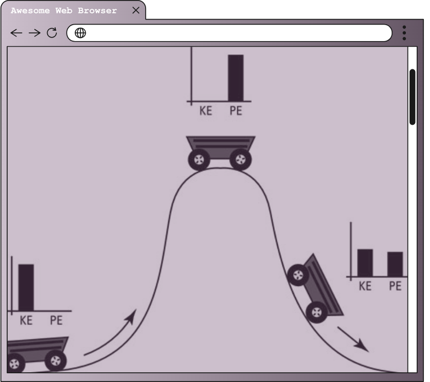

What is Mechanical Energy?
| Representation / Picture | Description / Explanation |
|---|---|
|  |
Mechanical energy is not just something you learn about in a high school physics classroom. It’s all around us. Mechanical energy can be found in a truck moving down a highway or a basketball when it’s in the air. It is present in everyday life such as in engines, cranes, and even artificial lakes. It’s one of the driving forces of the world. Mechanical energy is the energy a body has due to its movement or position. A good example would be the energy that is released while falling from a certain position. Mechanical energy is one of the basics studied in mechanical engineering, as it is literally the driving force of the world around us, be it natural or man-made. Mechanical energy is expressed in joules. There are two types of mechanical energy: potential energy and kinetic energy. Both of these will be discussed further to help you gain a better understanding of mechanical energy and how it’s a part of your everyday life |